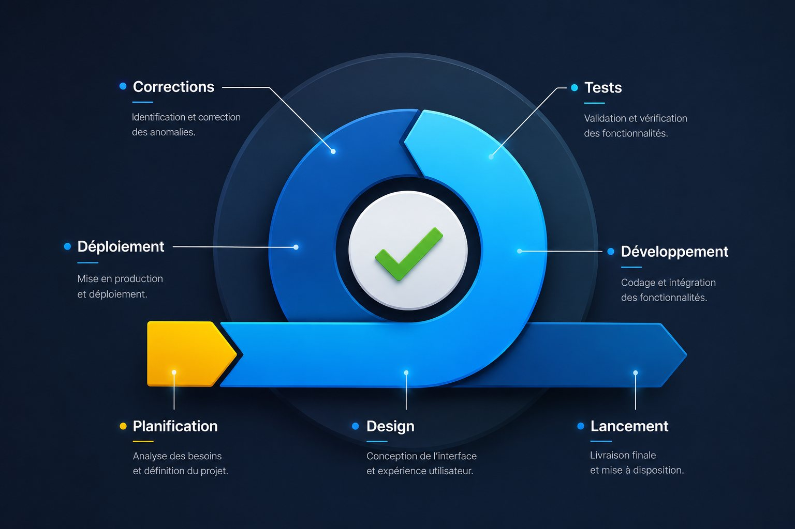
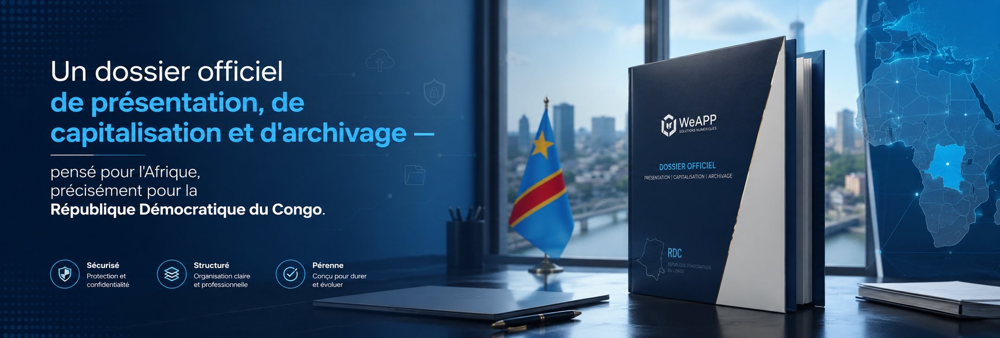

De la conception au déploiement.
WeAPP, filiale de Woldius SARL RDC dédiée à la conception de logiciels professionnels, structure, développe et documente des solutions numériques pour les institutions, entreprises et organisations de la République Démocratique du Congo et d'Afrique.
Un cycle logiciel maîtrisé, de bout en bout
De la planification à la mise en production — en passant par le design, le développement, les tests et les corrections — chaque logiciel WeAPP suit un cycle rigoureux et documenté. Cette rigueur est ce qui distingue un outil fiable d'un simple prototype.
- Un processus circulaire : chaque version corrigée nourrit la suivante
- Une méthode identique quel que soit le secteur ou la taille du projet
- Une traçabilité complète, du besoin initial jusqu'au déploiement

Une filiale dédiée à la conception de logiciels professionnels
WeAPP conçoit des solutions numériques pensées pour durer : cadrées par une analyse rigoureuse, construites sur une architecture technique solide, déployées avec méthode et systématiquement documentées. Notre mission est de fournir aux organisations un dossier officiel de présentation, de capitalisation et d'archivage de leurs projets numériques.
Une référence reconnue
Devenir une filiale reconnue pour la qualité de ses logiciels, la clarté de ses livrables et la solidité de ses déploiements en Afrique.
Concevoir et capitaliser
Accompagner les organisations de la conception au déploiement, avec un souci constant de documentation et d'archivage des livrables.
Rigueur et transparence
Un processus structuré, du recueil des besoins à la maintenance, pour garantir des résultats fiables et mesurables.
Des compétences complètes, de l'idée à la mise en production
Conception logicielle
Analyse fonctionnelle, spécifications et architecture pensées pour votre contexte opérationnel.
Développement
Applications web et outils métier robustes, évolutifs et maintenables.
Intégration
Connexion d'API et interconnexion de vos systèmes existants.
Déploiement
Mise en production accompagnée, formation des équipes et documentation complète.
Des solutions numériques conçues pour les réalités africaines
Chaque solution WeAPP répond à une problématique métier précise, avec une attention particulière portée à la fiabilité en contexte de connectivité variable et à la simplicité d'usage.
Digitalisation des processus internes
Dématérialisation des circuits administratifs et des workflows métier.
Gestion documentaire
Capitalisation, classement et archivage sécurisé des documents institutionnels.
Portails institutionnels
Sites et portails évolutifs, préparés pour devenir des espaces documentaires ou extranets.
Pourquoi les organisations nous font confiance
Rigueur méthodologique
Un processus structuré et documenté à chaque étape, du recueil des besoins à la maintenance.
Sécurité par défaut
Chiffrement en transit, formulaires sécurisés et gestion prudente des données collectées.
Ancrage africain
Une compréhension fine des réalités opérationnelles de la RDC et du continent.
Une expérience de terrain, projet après projet
Nos interventions couvrent des contextes variés — administrations, ONG, entreprises privées — avec un même exigence de qualité et de confidentialité.
Structuration et dématérialisation d'un circuit de traitement de dossiers administratifs, avec formation des équipes internes.
Mise en place d'un espace de capitalisation documentaire pour le suivi de projets de développement.
Conception d'un outil de gestion interne adapté aux contraintes de connectivité du terrain.
Un processus clair, de la conception au déploiement
Quatre phases documentées, reliées entre elles comme les pièces d'un même dossier — pensées pour que vous sachiez, à chaque instant, où en est votre projet.
Recueil des besoins et analyse
Compréhension fine du contexte, des contraintes et des objectifs de votre organisation — la base de tout projet bien mené.

Conception fonctionnelle et technique
Spécifications, choix d'architecture et validation complète avec vous avant le premier développement.

Développement, tests et déploiement
Construction rigoureuse par itérations, vérifications approfondies, puis mise en production accompagnée.

Formation, maintenance et archivage
Transfert de compétences vers vos équipes et capitalisation documentaire complète, pour une autonomie durable.

Les 4 phases se déclinent en 10 étapes documentées, du premier entretien à l'archivage final.

Discutons de votre projet numérique
Notre équipe étudie chaque demande avec attention et vous répond sous 48 heures ouvrées.